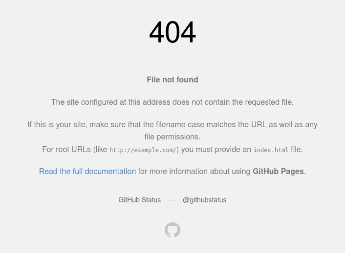

# Creando mi propio Static Site Generator - 05
Este es un post extra hablando de algunas funciones que no estaban planeadas
para crear el Static Site Generator, pero que mejoran la developer experience
y la experiencia de los usuarios.
## Seleccionar URL base
Al probar los templates y estilos de forma local, es necesario que los headers de estilos apunten a una URL local (o hacer un cambio de CORS). Sin embargo, en la versión final, deben apuntar a la URL de nuestra Web.
Para evitar modificar manualmente el template según el entorno, añadí la opción de ejecutar el programa con un flag que determina si se debe usar la URL local o la de la Web.
// main.ts
const URL = [
"http://nicolas-sabbatini.github.io", // URL local
"https://nicolas-sabbatini.github.io", // WEB
];
let SELECTED_URL = 0; // Por defecto siempre se apunta a local
if (Deno.args[0] === "prod") {
SELECTED_URL = 1;
}
/*
Se omite mucho código
*/
// Cuando se ejecuta el template
template({ content, base_url: URL[SELECTED_URL] }),<!--Template-->
<link
rel="stylesheet"
href="{{base_url}}/assets/styles.css"
>## Hot Reloading
Al probar los templates y estilos de forma local era necesario volver a ejecutar el builder manualmente para ver las modificaciones en los archivos finales.
Para evitar esto, creé una pequeña función que utiliza Deno.watchFs para detectar cambios en la bóveda, los templates y estilos, y reejecutar automáticamente el builder, asegurando que siempre tengamos disponible la version más reciente de nuestra Web.
buildWeb();
const watcher = Deno.watchFs([".", VAULT_PATH], { recursive: true });
for await (const event of watcher) {
if (
event.kind !== "any" && event.kind !== "other" && event.kind !== "access"
) {
template = Handlebars.compile(
Deno.readTextFileSync("./template/base.html"),
);
buildWeb();
}
}## Git hooks
Al poder cambiar dinámicamente la URL de estilos se abre la posibilidad de que al finalizar con las modificaciones de nuestra WEB, nos olvidemos de buildear nuestro proyecto o nos olvidemos de utilizar las flags correctas en dicho proceso.
Para evitar esto tenemos 2 opciones, utilizar GitHub actions o algún servicio
parecido para construir nuestra WEB en la "nube" o crear un
Git hook.
Como este es un proyecto chico y solo yo voy a estar modificando el repositorio voy a estar optando por la segada opción.
Para esto simplemente creamos un archivo llamado pre-commit dentro del
directorio .git/hooks, en el podemos escribir comandos arbitrario que Git va a
ejecutar antes de realizar la acción de commit.
Para nuestro proyecto los siguientes comandos es suficiente.
# # Seleccionamos la shell para ejecutar nuestros comandos
#!/bin/sh
# # Nos movemos al directorio de nuestro publisher
cd publisher
# # Ejecutamos nuestro proyecto de DENO con las variables correctas
deno run --allow-all main.ts prod
# # Volvemos a la carpeta anterior
cd ..
# # Añadimos nuestra el directorio de salida al commit
git add docs
return 0## 404
Si algún usuario intenta acceder a una página que no existe dentro de nuestra web este se va a encontrar con la pantalla de error 404 genérica de GitHub.

Para crear nuestra propia página de error 404, tenemos que crear en el
directorio de nuestro blog un archivo llamado 404.html, y en el escribir el
coódigo de nuestra página.
<html lang="es-AR">
<head>
<!--Meta data de render-->
<meta charset="UTF-8">
<meta name="viewport" content="width=device-width, initial-scale=1.0">
<!--Título de la página-->
<title>404 Upss</title>
<!--SEO-->
<meta
name="description"
content="Upssss..."
>
<meta name="keywords" content="404">
<meta name="author" content="CoffeeBreak">
<meta name="robots" content="index, follow">
<!--Favicon-->
<link
rel="icon"
type="image/svg+xml"
href="http://nicolas-sabbatini.github.io/assets/favicon.svg"
>
<!--Tarjetas para redes sociales-->
<meta
property="og:title"
content="404 - Upssss..."
>
<meta
property="og:description"
content="Está página no existe ¿Sera algo temporal o permanente?."
>
<meta
property="og:url"
content="http://nicolas-sabbatini.github.io/404.html"
>
<meta property="og:type" content="website">
<meta name="twitter:card" content="summary_large_image">
<meta
name="twitter:title"
content="404 - Upssss..."
>
<meta
name="twitter:description"
content="Está página no existe ¿Sera algo temporal o permanente?."
>
<!--Estilos-->
<link
rel="stylesheet"
href="http://nicolas-sabbatini.github.io/assets/styles.css"
>
<!--Fuentes-->
<link rel="preconnect" href="https://fonts.googleapis.com">
<link rel="preconnect" href="https://fonts.gstatic.com" crossorigin="">
<link
href="https://fonts.googleapis.com/css2?family=Roboto+Mono:ital,wght@0,100..700;1,100..700&display=swap"
rel="stylesheet"
>
</head>
<body>
<div class="header">
<div class="header-left">
<a href="/" class="page-title">CoffeeBreak</a>
</div>
<div class="header-center">
<a href="http://nicolas-sabbatini.github.io/blog" class="page-title"
>404</a>
</div>
<div class="header-right"></div>
</div>
<div class="content">
<h1>
404 - Upssss...
</h1>
<div class="footer">
<a href="javascript:history.back()" class="footer-left">Volver</a>
</div>
</div>
</body>
</html>